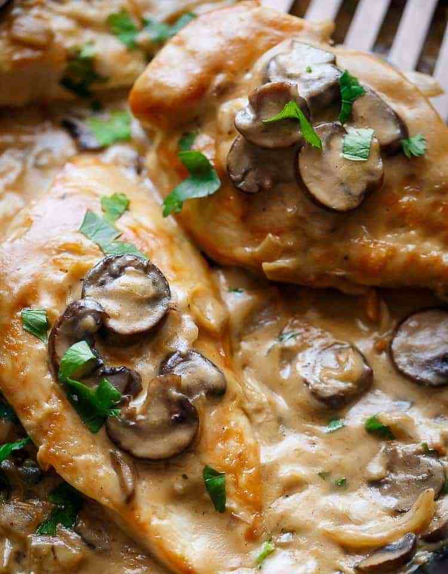

Champagne Chicken

Description
This champagne chicken uses champagne — to turn ordinary skinless,
boneless chicken breasts into a truly amazing dish with a world-class mushroom pan sauce.
These old-school-type pan sauces are classic for a reason. The depth of flavor is impressive.
Ingredients
- 4 skinless, boneless chicken breasts
- 2 teaspoons kosher salt
- 2 tablespoons olive oil
- freshly ground black pepper to taste
- 1 pinch cayenne pepper, or to taste
- 2 generous cups thickly sliced mushrooms
- 1/4 cup diced shallots
- 3 cloves garlic, minced
- 4 teaspoons all-purpose flour
- 1 1/2 cups champagne or any sparkling wine
- 1/2 teaspoon tomato paste
- 2 teaspoons fresh thyme leaves
- 1 1/2 cups chicken broth
- 1/2 cup heavy cream
- 1 tablespoon aged balsamic vinegar (optional)